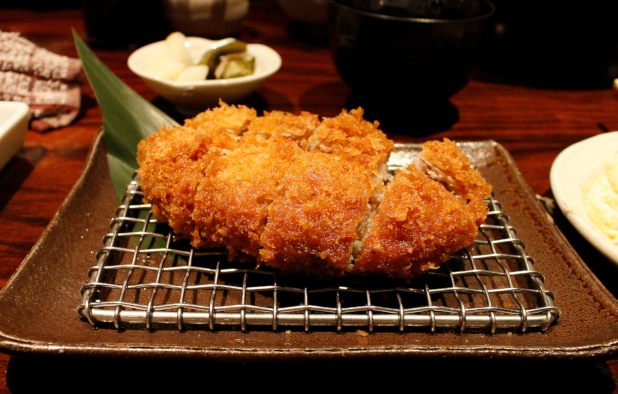

A tonkatsu recipe

Description
A Japanese dish of breaded and deep-fried pork cutlet. This version
utilizes pork loin, and is typically served with shredded cabbage,
cucumber, and tonkatsu sauce, which is a thick worcestershire-like sauce.
It can be eaten on its own or used in other recipes like katsu curry or
tonkatsu sandwiches. The key features are the crispy panku breadcrumb
crust and the tender, juicy interior.
Ingredients
- 1/2 cup panko (Japanese breadcrumbs)
- 1 Large egg
- 1/2 Tbsp neutral oil
- 2 Tbsp all-purpose flour
- 2 Boneless pork loin chops (1/2 inch thick)
- 1/2 tsp salt
- 1/8 tsp black pepper
- 3 cups netural oil
Steps
-
Trim excess fat from the 2 pork chops, cut small slits around the edges,
pound them flat, and season each side with 1/2 tsp salt and 1/8 tsp
black pepper total.
-
Set out 2 Tbsp flour in one tray, 1 beaten egg mixed with 1/2 Tbsp oil
in another, and 1/2 cup panko in a third. Heat 3 cups neutral oil to
340°F.
- Coat each pork chop in flour, then egg mixture, then panko.
-
Fry one chop for 1 minute, flip, and fry 1 more minute. Transfer to a
rack and repeat with the second chop.
-
Increase the oil to 355°F. Fry each chop again for 30 seconds per side,
placing them back on the rack to rest.
Home